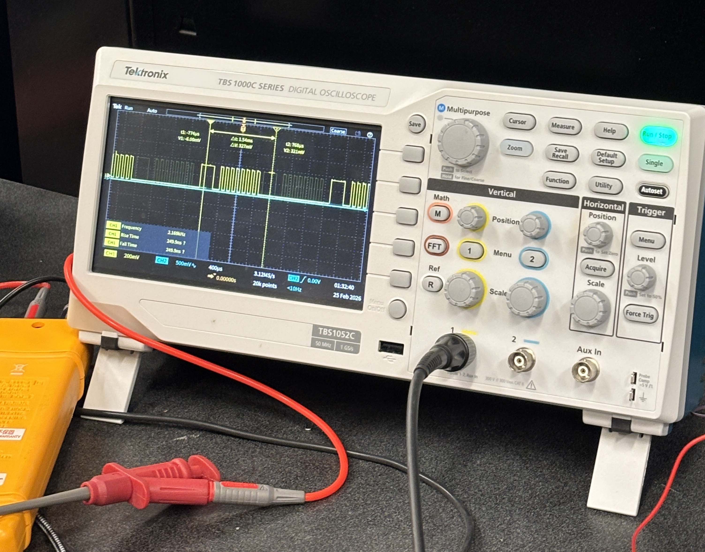

About
Who I am
I am an Electrical and Computer Engineering student at Georgia Tech, still finding my corner of a wide field — and genuinely excited about that process. I learn best by building things: a concept does not fully click until I have implemented it, broken it, and figured out exactly why.
On the technical side, I bring hands-on experience with embedded systems, mixed-signal hardware, and software development. I am comfortable moving between a schematic and a codebase without losing the thread — and I find the most interesting problems live exactly at that boundary.
As Senior Developer in my university's iOS Club, I contribute to real shipped applications while mentoring newer members through the gap between knowing syntax and building something that actually works in production.
Alongside the technical work, I conduct research in communications systems at the undergraduate level — gaining exposure to signal processing, experimental methodology, and the discipline of academic writing.
What ties everything together is genuine curiosity. I do not need a problem to be glamorous. I need it to be real, with measurable outcomes and room to grow into something bigger than where it started.
I am actively seeking internship and research opportunities where careful engineering meets real constraints and real users. If that sounds like something you are working on, I would love to hear about it.
Education
Where I study
Skills & Technologies
What I work with
// hover any component to inspect · current flows continuously
Projects
Things I've built
The core idea behind this project is backscatter communication — a technique where a sensor node transmits data not by actively broadcasting a signal, but by selectively reflecting or absorbing an incoming one. The key component is a PZT (piezoelectric) transducer whose impedance can be switched between two states, effectively encoding binary information onto the reflected waveform. This approach is compelling for low-power and implantable sensing applications where a dedicated transmitter is impractical.
My role throughout the semester was to physically realise the circuit — breadboarding the design, assembling duplicate copies for comparative testing, and characterising their behaviour using signal generators and oscilloscopes. This was my first sustained experience with RF-adjacent hardware and lab instrumentation at this level of precision, and it forced me to develop systematic measurement habits and a sharper intuition for what "good" versus "noisy" data looks like on a scope trace.

The challenges were real. Component availability caused repeated delays — substitutions that look equivalent on a datasheet can behave very differently at the frequencies we were targeting. The most persistent anomaly was a resonance shift: the circuit was designed to switch into communication mode at 330 kHz, but consistently triggered closer to 310 kHz instead. Hunting down the cause involved methodically isolating variables across multiple board builds. Even after correcting that offset, the reflected data waveforms did not match expected output — the signal shape was wrong in ways that pointed beyond a simple component or layout issue.

That diagnosis became a turning point. Rather than continuing to patch a flawed implementation, the team recognised that the anomalies likely stem from a limitation in the original circuit architecture itself. We are now redesigning the circuit from the ground up in KiCad, guided by a published dissertation on backscatter topology. The failure taught me something that no working prototype could: how to read an experiment's results as a signal about design assumptions, not just execution quality — and how to decide when iteration stops and a deeper rethink begins.
Looking ahead, there is still significant work to do. The KiCad redesign is ongoing, and the goal is to fabricate and test a new board before the semester closes. I will be continuing this research into next semester — and as I move deeper into the ECE curriculum and take more relevant coursework, I expect to be able to contribute more independently and at a greater technical depth. This project has made it clear that the intersection of hardware design, RF systems, and low-power communication is genuinely where I want to spend my time — and it has given me a concrete foundation to build from.
Experience
Where I've shown up
Resume
Full résumé
A complete résumé covering my education at Georgia Tech, technical skills, project work, and experience is available as a PDF download. It is updated at the start of each semester to reflect current coursework, club roles, and any new projects.
The résumé is formatted for both technical recruiting and academic research applications. If you would like a version tailored to a specific role or programme, feel free to reach out directly.
Contact
Get in touch
I am open to internship opportunities, research collaborations, and interesting engineering conversations. If something on this site caught your attention, or if you are building something where my background could be useful — I would genuinely love to hear from you.